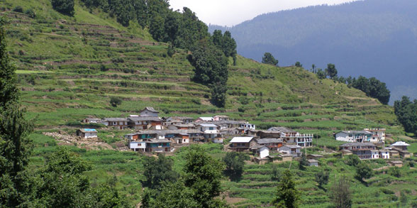
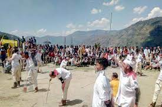
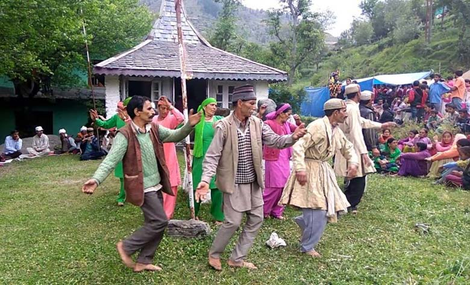

SIRMAUR:
Also known as the Peach bowl of India, Sirmaur (or Sirmour) is located in south-eastern region of Himachal Pradesh. The town was founded in 1090 AD by Raja Rasloo of Jaisalmer and was a princely state during the British rule in India. The town due to its various picturesque locations and a favorable climate is one of the top tourist destinations in Himachal Pradesh. Here is a list of the best attractions in Sirmaur.

Famous Places Around Sirmaur :
1. Vishu Festival:: :
Vishu festival falls on the last two days of the solar month of Chaitra and the first of Baisakh that is in the month of April. It is more or less similar to the Baisakhi celebrations of the plains. Vishu fair is held in several villages, and the dates of this fair vary. All over the hilly areas of the Paonta Sahib Tehsil it is celebrated from 1st to 12th Baisakh. Archery is the highlight of this fair. Besides thoda (dance with archery), there is much of feasting, drinking and general dancing.

2. Haryali Festival:
The place is crowned by a famous and ancient lake called the Renuka Lake and is one of the major pilgrim spots in Himachal Pradesh. Renuka Ji is also home to a famous gaming sanctuary and a wildlife reserve with a plethora of species of flora and fauna. Various festivities are organized during the Kartika Ekadashi in the Hindu calendar and the festivities are not to be missed.
